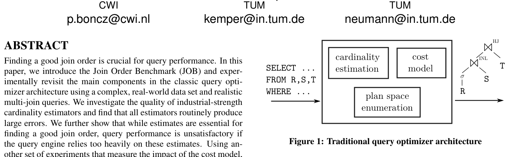
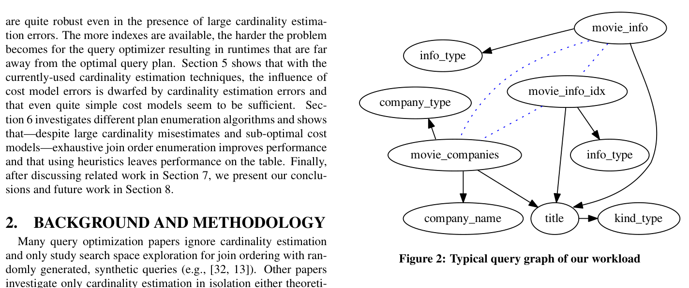
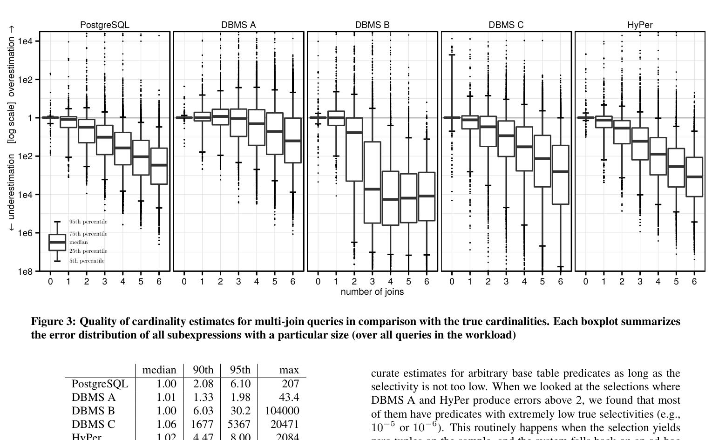
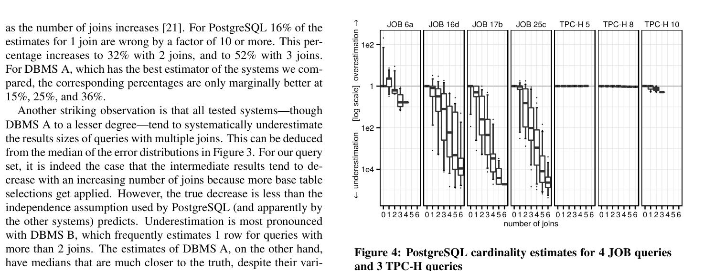
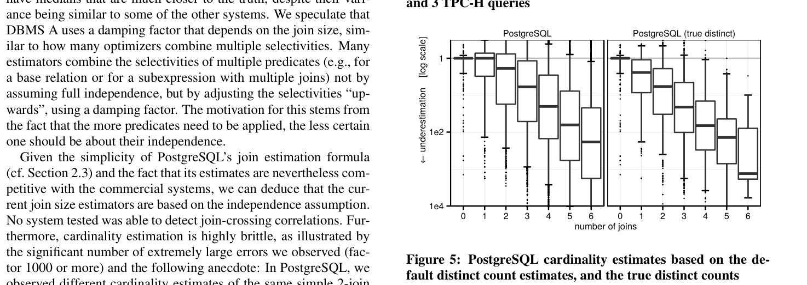
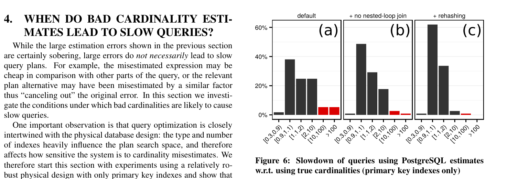
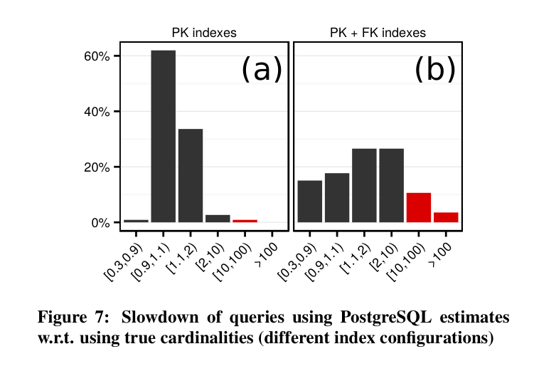
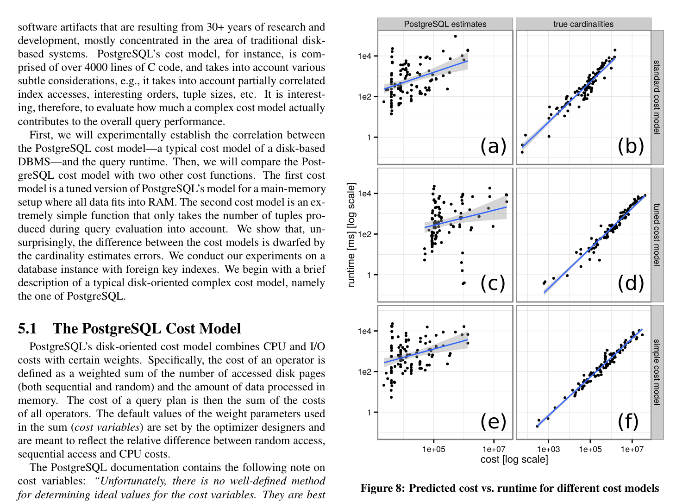
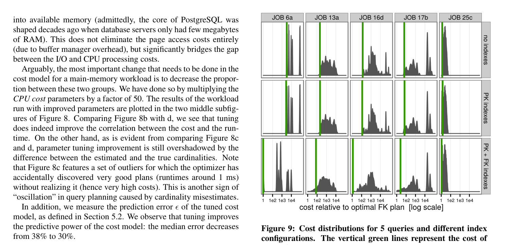

在 join order 学习路线中，我们经常先学 System R DP、IKKBZ、DPccp、top-down partitioning、Volcano/Cascades 等算法。这些工作回答的是：
但工程上还有另一个问题：枚举器找的是“估计代价最低”的计划，如果 cardinality/cost 输入是错的，枚举器到底还能帮多少？这篇论文的价值就在这里。它把传统优化器拆成三块分别实验：
| 组件 | 论文中的英文术语 | 它控制什么 | 论文主要结论 |
|---|---|---|---|
| 基数估计 | Cardinality Estimation | 每个 base selection / intermediate join result 有多少行。 | 误差随 join 数快速放大，是坏计划的主要原因。 |
| 代价模型 | Cost Model | 给候选物理计划打分，比较 scan、join、index lookup 等成本。 | 在 main-memory JOB 场景下，复杂模型不如正确 cardinality 关键。 |
| 计划枚举 | Plan Space Enumeration / Plan Search | 枚举哪些 join tree、join method、access path。 | 穷举 bushy DP 比启发式有中等但实在的收益；不应轻易放弃。 |
论文从传统 cost-based optimizer 的架构出发：查询优化器枚举若干语义等价的候选计划，用 cardinality estimates 作为主要输入，再由 cost model 选择最便宜的计划。

理论上，如果 cardinality estimation 和 cost model 都准确，那么这个架构可以选到最优计划。现实中，优化器通常要依赖 uniformity（均匀分布）、independence（谓词独立）、principle of inclusion（小 domain 的 join key 都能在大 domain 中匹配）这类简化假设。真实数据里这些假设经常不成立，特别是多表 join 后的相关性。
论文明确提出三个问题：
IMDB 113 queries 真实相关性
论文认为 TPC-H、TPC-DS、SSB 这类合成 benchmark 对 cardinality estimation 不够“坏”。原因是这些数据生成器通常也采用 uniformity、independence 等简化假设；而优化器估计时用的也是类似假设。因此 TPC-H 往往让优化器看起来比真实世界更聪明。
JOB 使用 IMDB 数据集。论文使用 2013 年 5 月快照，经 imdbpy 转为 21 张关系表；导出 CSV 约 3.6GB，最大的两张表 cast_info 和 movie_info 分别约 3600 万行与 1500 万行。IMDB 的优点是自然包含偏斜分布和跨表相关性，例如演员、电影类型、国家、公司、评分之间并非独立。
JOB 查询都是 select-project-join block。论文构造了 33 个 query structures，每个结构有 2-6 个只在 selection 上不同的 variants，总共 113 个查询。它们包含 3 到 16 个 join，平均 8 个 join。
一个典型查询会问类似“美国公司制作的电影的评分与上映日期”这种电影爱好者可能真的会问的问题。

PostgreSQL 被选作主要实验系统，因为它是传统 textbook 架构、开源、可修改。论文描述的 PostgreSQL 优化器特征包括：
PostgreSQL 的等值 join cardinality 估计公式被论文写成：
|T1 join_{x=y} T2| = |T1| * |T2| / max(dom(x), dom(y))
dom(x): attribute x 的 distinct value count
核心假设: uniformity + independence + principle of inclusion为了隔离变量，作者把 IMDB 数据加载到 PostgreSQL、HyPer 和 3 个商业系统中，先用各系统默认统计信息收集命令得到统计信息，再抽取每个 JOB 查询所有中间表达式的估计 cardinality。同时，作者通过执行 SELECT COUNT(*) 获得每个中间表达式的真实 cardinality。
更关键的是，作者修改 PostgreSQL，使其可以对任意 join expression 注入 cardinality。这样就能问一个非常干净的问题：
同一个 PostgreSQL execution engine
同一个 PostgreSQL plan search / cost model
只替换 cardinality estimates:
- PostgreSQL estimates
- HyPer estimates
- commercial DBMS estimates
- true cardinalities
然后比较最终计划 runtime主因 q-error join-crossing correlation
论文用 q-error 衡量估计质量。真实 cardinality 为 100 时，估计为 10 或 1000 的 q-error 都是 10。它强调的是相对误差，而不是绝对误差。
q_error(estimate, true) = max(estimate / true, true / estimate)这很适合优化器，因为计划比较通常关心“这个候选比那个候选大多少/小多少”，而不是单纯差了多少行。
| 系统 | median | 90th | 95th | max | 学习笔记 |
|---|---|---|---|---|---|
| PostgreSQL | 1.00 | 2.08 | 6.10 | 207 | 多数 selection 估得准，但尾部误差明显。 |
| DBMS A | 1.01 | 1.33 | 1.98 | 43.4 | base table 估计最强；论文推测可能使用 sampling。 |
| DBMS B | 1.00 | 6.03 | 30.2 | 104000 | 中位数好，但极端错误很大。 |
| DBMS C | 1.06 | 1677 | 5367 | 20471 | base selection 在该 workload 上表现很差。 |
| HyPer | 1.02 | 4.47 | 8.00 | 2084 | 用每表 1000 行 random sample 估计 base predicate。 |
表 1 的重点不是“哪个系统赢”，而是：base table selection 的 median 常常接近 1，但复杂 predicate、极低选择率、相关属性会让尾部错误非常大。HyPer 这类 sample-based 方法对 base predicate 很有效，但当真实 selectivity 太低，sample 中可能一个命中都没有，于是还是会退回经验方法。
真正困难的是 intermediate join result。论文统计了超过 100,000 个中间结果估计。图 3 的核心结论是：



大 q-error 并不必然导致慢查询。如果某个误估表达式本来就不贵，或者两个候选计划被类似比例误估，最终计划可能仍不错。论文第 4 节的重点是找出坏估计真正变成灾难的条件。
作者把不同系统的 cardinality estimates 注入 PostgreSQL，并与注入 true cardinalities 的计划运行时间比较。以下是 primary-key-only 配置下的 slowdown 分布：
| 估计来源 | <0.9 | [0.9,1.1) | [1.1,2) | [2,10) | [10,100) | >100 |
|---|---|---|---|---|---|---|
| PostgreSQL | 1.8% | 38% | 25% | 25% | 5.3% | 5.3% |
| DBMS A | 2.7% | 54% | 21% | 14% | 0.9% | 7.1% |
| DBMS B | 0.9% | 35% | 18% | 15% | 7.1% | 25% |
| DBMS C | 1.8% | 38% | 35% | 13% | 7.1% | 5.3% |
| HyPer | 2.7% | 37% | 27% | 19% | 8.0% | 6.2% |
<0.9 表示用错误估计反而比用 true cardinalities 更快，这通常来自 cost model error：true cardinalities 只保证“相对于该 cost model 最优”，不保证真实 runtime 最优。
作者观察到，很多 timeout 来自 PostgreSQL 因严重低估而选择 nested-loop join，且 inner side 没有 index lookup。因为 nested loop 是 O(n²) 风险，而 hash join 通常是 O(n)。如果两个估计代价只差一点点，纯 cost-based 决策会选择估计上略便宜的 nested loop，但实际 payoff 很小，downside 很大。

在只有 primary key indexes 时，大的 fact tables 多半必须 full scan。不同 join order 仍然重要，但可选择 access path 较少，搜索空间没有那么多“高收益但高风险”的分支。再加上 main-memory 场景下 index-nested-loop 和 hash join 的差距被缓和，错误估计不一定立刻导致灾难。
论文给出一个经验观察：在全部数据和 index 都缓存于内存时，hash join 相比 index-nested-loop 的优势在 PostgreSQL 中最多约 5 倍，在 HyPer 中最多约 2 倍。这与磁盘上 random I/O 被放大的情况不同。

论文把跨表相关性称作 join-crossing correlations。单表 sample 可以很好估计表内 correlated predicates，但跨表相关性很难。作者用 ROX/DBLP 的例子说明：即使优化器能知道某个跨表相关性，如果物理设计没有相应 access path，也可能无法利用。
4000+ LOC main-memory simple Cmm
PostgreSQL 的 cost model 是一个复杂的 disk-oriented artifact，论文说它有 4000 多行 C 代码，会考虑 CPU、I/O、随机页访问、顺序页访问、tuple size、interesting order、部分相关 index access 等因素。
这个复杂性自然引出问题：在 JOB 这种数据全部在内存里的场景，复杂 cost model 对最终性能到底贡献多少？

PostgreSQL 默认参数暗含“处理一个 tuple 比从 page 读数据便宜 400 倍”的假设。论文为了贴近 main-memory workload，把 CPU cost parameters 乘以 50，以缩小 CPU 与 I/O 的差距。这样 median prediction error 从 38% 降到 30%。
但是，调参带来的改进仍小于“估计 cardinality vs true cardinality”的差距。论文还观察到 cardinality misestimates 会导致计划选择“振荡”：优化器偶然发现很快的计划却给了很高 cost，或反过来。
论文设计了一个非常简单的 main-memory cost function：不建模 I/O，只数查询执行过程中经过各 operator 的 tuple 数，并区分 hash join 和 index-nested-loop join。参数中 lambda = 2 近似 index lookup 比 hash lookup 更贵，tau = 0.2 折扣 table scan 成本。
Cmm 的精神版本:
scan / selection:
cost = tau * |R|
hash join:
cost = |join result| + cost(left) + cost(right)
index nested-loop:
cost = cost(left) + lambda * |left| * lookup_factor在 true cardinalities 下，tuned cost model 的几何平均 runtime 比 PostgreSQL standard model 快 41%，这个简单 Cmm 也快 34%。这是有意义的提升，但论文强调：它仍然被“把 estimated cardinalities 换成 true cardinalities”的收益压过。
论文第 6 节研究最后一个组件：plan enumeration algorithm。这里作者使用 standalone optimizer 实现 DP 和若干 heuristic algorithms。为了比较大量候选计划，他们不逐个执行计划，而是：
1. 用某种 cardinality estimates 让 optimizer 选计划
2. 用 true cardinalities + Section 5.4 的 in-memory cost model 重新计算该计划的 true-ish cost
3. 以此近似该计划真实 runtime
这个近似依赖前一节结论：在 main-memory JOB 设置中，cost model error 相比 cardinality error 可以认为是次要的。

| 物理设计 | 不超过最优 1.5 倍的计划比例 | worst/best 平均宽度 | 含义 |
|---|---|---|---|
| 无索引 | 44% | 101x | 好计划相对多，access path 少。 |
| 仅 PK indexes | 39% | 115x | 与无索引相近，因为 JOB 没有 primary key selection。 |
| PK + FK indexes | 4% | 48120x | 好计划稀少，搜索空间风险变大。 |
作者修改 DP，只枚举 left-deep、right-deep 或 zig-zag trees，然后用 true cardinalities 比较受限空间与最优 bushy plan 的差距。
| tree shape | PK median | PK 95% | PK max | PK+FK median | PK+FK 95% | PK+FK max |
|---|---|---|---|---|---|---|
| zig-zag | 1.00 | 1.06 | 1.33 | 1.00 | 1.60 | 2.54 |
| left-deep | 1.00 | 1.14 | 1.63 | 1.06 | 2.49 | 4.50 |
| right-deep | 1.87 | 4.97 | 6.80 | 47.2 | 30931 | 738349 |
结论比较细腻：zig-zag trees 表现不错，left-deep 也还算可接受；right-deep 单独使用很糟。bushy exhaustive enumeration 有收益，但在该 workload 上收益是“中等但不可忽略”，不是压倒一切。
论文比较了 DP、Quickpick-1000 和 Greedy Operator Ordering (GOO)。Quickpick-1000 随机生成 1000 个计划并选估计 cost 最低者；GOO 每次合并 cost 最低的一对 join trees。三者都用 PostgreSQL cardinality estimates 选计划，再用 true cardinalities 计算相对最优 cost。
| 配置 | 算法 | median | 95% | max | 笔记 |
|---|---|---|---|---|---|
| PK + PostgreSQL estimates | DP | 1.03 | 1.85 | 4.79 | 估计有误时仍优于两个启发式。 |
| PK + PostgreSQL estimates | Quickpick-1000 | 1.05 | 2.19 | 7.29 | 接近 DP，但尾部更差。 |
| PK + PostgreSQL estimates | GOO | 1.19 | 2.29 | 2.36 | 尾部不大，但 median 更差。 |
| PK+FK + PostgreSQL estimates | DP | 1.66 | 169 | 186367 | 更多 access paths 下，估计错会非常痛。 |
| PK+FK + PostgreSQL estimates | Quickpick-1000 | 2.52 | 365 | 186367 | 启发式在 rich physical design 下更吃亏。 |
| PK+FK + PostgreSQL estimates | GOO | 2.35 | 169 | 186367 | 未充分感知 indexes，收益有限。 |
如果注入 true cardinalities，DP 当然是 1.00；Quickpick-1000 与 GOO 仍会因为搜索不完整而损失性能，尤其在 PK+FK 配置中，Quickpick-1000 的 95% slowdown 为 4.72，GOO 为 5.77。
传统优化器把 cardinality 当成一个确定数字，然后让 cost model 精确比较计划。论文的实验说明这个点估计常常不可靠。更稳的设计应考虑 estimate uncertainty，也就是“这个估计错了会怎样”。
论文认为 table samples 对 base table estimation 是简单且 robust 的技术。可是 JOB 的主要困难在跨表相关性：单表 sample 无法直接知道“演员出生地”和“电影产地”经 join 后的相关结构。相关工作里有 join samples、sketches、graphical models、feedback、MaxEnt 等路线，但工程落地仍困难。
增加 FK indexes 通常提高总体执行能力，但也让优化器更容易在复杂 access path 中选错。论文中好计划比例从 PK-only 的 39% 降到 PK+FK 的 4%，这说明“给优化器更多选择”并不自动等于“优化器更容易成功”。
在 main-memory workload 中，简单 tuple-counting cost model 已经相当有竞争力。这不代表 cost model 可有可无，而是说明设计精力应优先投向 cardinality 和 robust execution。与此同时，DP/bushy exhaustive enumeration 仍然有收益；估计有错不是放弃好枚举器的理由。
System R、IKKBZ、DPccp、top-down partitioning、Volcano/Cascades 等材料主要研究搜索空间与算法效率。这篇论文补上的问题是：
搜索算法找到的最优，是哪个世界里的最优？
estimated cardinalities + cost model 世界:
optimizer 看到的最优
true cardinalities + actual runtime 世界:
用户体验到的好坏
因此，学习 join order 时可以把这篇论文放在“枚举算法之后、真实优化器之前”：它提醒我们，join order search 算法再漂亮，也需要被 cardinality、cost model、physical design 和 runtime robustness 包围起来理解。
本仓库的 demos/demo 是一个教学型 join reorder demo：从代码结构看，它包含 DPSub、transformational search、top-down partitioning、MincutLazy、shared cost model、StatsCatalog、trace counters 等组件。它很适合演示“搜索策略如何枚举同一个 join graph 并找到相同 best cost”。
这篇论文给 demo 的启发是：
rows 与 predicate selectivity，观察估计错误如何改变 best plan。Cmm 告诉我们，一个教学 demo 可以先用简单、确定、可解释的 cost formula；复杂性应服务于实验问题，而不是为了像真实系统而复杂。PlansCosted、DPCells、Partitions 等计数可以帮助把这种搜索成本具体化。| 结论 | 为什么重要 |
|---|---|
| Cardinality Estimation 是传统优化器最脆弱的输入。 | 多 join 后误差会快速放大，所有被测系统都会出现数量级错误，且常系统性低估。 |
| 坏估计不必然导致慢查询，关键在执行策略是否 robust。 | 禁用高风险非 index nested-loop join、启用 runtime rehashing 后，primary-key-only 场景明显稳定。 |
| Cost Model 有用，但在 JOB main-memory 场景不是主要矛盾。 | 调参和简单 Cmm 都能改进，但收益小于把 estimated cardinalities 换成 true cardinalities。 |
| Plan Search 仍值得认真做。 | 即使估计不完美，exhaustive DP 仍优于启发式；rich access paths 下好计划更稀有。 |
| 物理设计会改变优化问题难度。 | FK indexes 提高潜在性能，也让错误计划的风险变大；优化器需要在更多选择中识别少数好计划。 |
| join-crossing correlations 是开放前沿。 | 单表 sample 不足以解决跨表相关性；估计、access path、runtime adaptivity 需要一起设计。 |
术语保留：Cardinality Estimation（基数估计）、Cost Model（代价模型）、Plan Space Enumeration / Plan Search（计划空间枚举/搜索）、Join Order Benchmark (JOB)、q-error、join-crossing correlations、Dynamic Programming (DP)、Quickpick、Greedy Operator Ordering (GOO)。